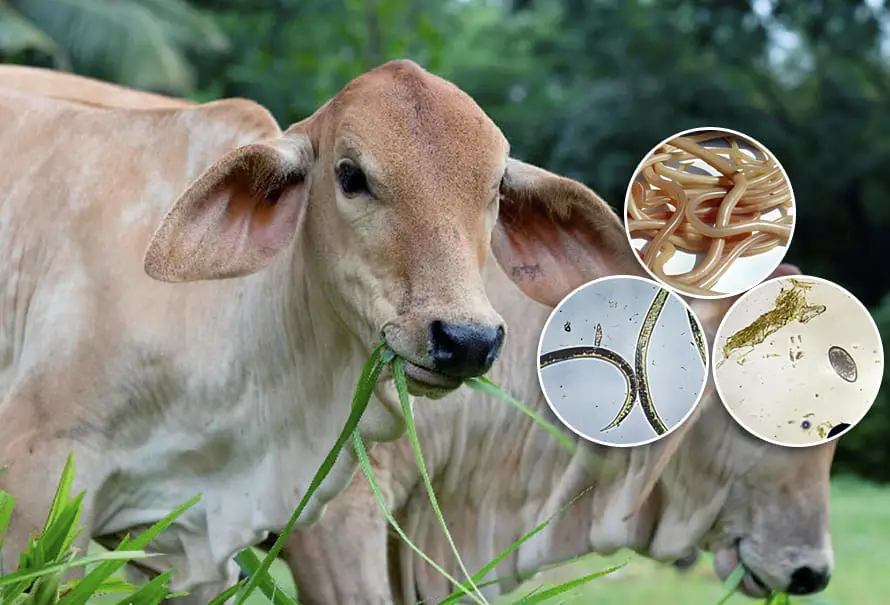

Alta Gravedad
Alta Gravedad
Mastitis Bovina
Inflamación de la glándula mamaria
Descripción
Infección bacteriana de la ubre que causa inflamación y reduce significativamente la producción de leche. Es una de las enfermedades más costosas en la producción lechera.
Síntomas principales
- Ubre inflamada, caliente y enrojecida
- Leche con grumos o sangre
- Fiebre y disminución del apetito
- Reducción drástica en producción
Prevención
Higiene rigurosa durante el ordeño, desinfección de pezones, mantenimiento adecuado del equipo de ordeño y detección temprana mediante pruebas regulares.
 Alta Gravedad
Alta Gravedad
Fiebre Aftosa
Enfermedad viral altamente contagiosa
Descripción
Enfermedad viral aguda y extremadamente contagiosa que afecta principalmente a animales de pezuña hendida. Causa graves pérdidas económicas por restricciones comerciales.
Síntomas principales
- Fiebre alta (40-41°C)
- Vesículas en boca, lengua y pezuñas
- Salivación excesiva y cojera
- Pérdida de apetito y producción
Prevención
Vacunación obligatoria según calendario oficial, cuarentena de animales nuevos, bioseguridad estricta y notificación inmediata a autoridades sanitarias.
 Alta Gravedad
Alta Gravedad
Brucelosis
Enfermedad zoonótica bacteriana
Descripción
Enfermedad infecciosa causada por bacterias del género Brucella. Altamente peligrosa porque puede transmitirse a humanos a través del contacto con animales infectados o consumo de productos lácteos no pasteurizados.
Síntomas principales
- Abortos en el último tercio de gestación
- Retención de placenta
- Inflamación de articulaciones
- Infertilidad y esterilidad
Prevención
Vacunación de terneras, pruebas serológicas periódicas, eliminación de animales positivos, pasteurización de leche y uso de equipo de protección al manipular partos.
 Gravedad Media
Gravedad Media
Acidosis Ruminal
Trastorno metabólico digestivo
Descripción
Desorden metabólico causado por consumo excesivo de carbohidratos fermentables que reduce el pH ruminal. Afecta la digestión y puede causar problemas sistémicos graves.
Síntomas principales
- Disminución del apetito
- Diarrea y deshidratación
- Cojera y laminitis
- Caída en producción de leche
Prevención
Transición gradual a dietas ricas en concentrados, suministro adecuado de fibra efectiva, alimentación frecuente en pequeñas porciones y monitoreo del pH ruminal.
 Gravedad Media
Gravedad Media
Neumonía Bovina
Infección del sistema respiratorio
Descripción
Infección pulmonar causada por virus, bacterias o una combinación de ambos. Común en terneros y animales jóvenes, especialmente en condiciones de estrés o hacinamiento.
Síntomas principales
- Tos persistente y secreción nasal
- Respiración rápida y dificultosa
- Fiebre y pérdida de apetito
- Letargo y separación del grupo
Prevención
Ventilación adecuada de instalaciones, reducción del estrés, vacunación preventiva, evitar hacinamiento y mantener condiciones de humedad controladas.

Gravedad Baja
Parasitosis Interna
Infestación por parásitos gastrointestinales
Descripción
Infestación por nematodos, cestodos y otros parásitos que habitan el tracto digestivo. Causa pérdidas productivas graduales y predispone a otras enfermedades.
Síntomas principales
- Pérdida gradual de peso
- Diarrea intermitente
- Pelo áspero y sin brillo
- Reducción en producción de leche
Prevención
Desparasitación estratégica según calendario, rotación de potreros, análisis coprológicos periódicos, manejo adecuado de pastos y agua limpia.
💡 Recomendaciones Generales
La prevención es siempre más económica que el tratamiento. Mantén un programa de bioseguridad estricto, realiza chequeos veterinarios regulares, lleva registros detallados de salud y producción, y capacita constantemente a tu personal en la identificación temprana de síntomas. Ante cualquier sospecha de enfermedad, consulta inmediatamente con un médico veterinario.